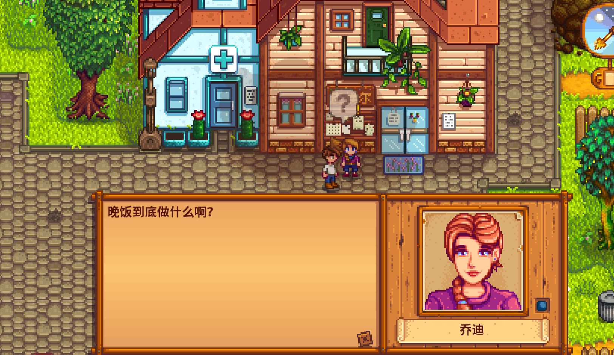
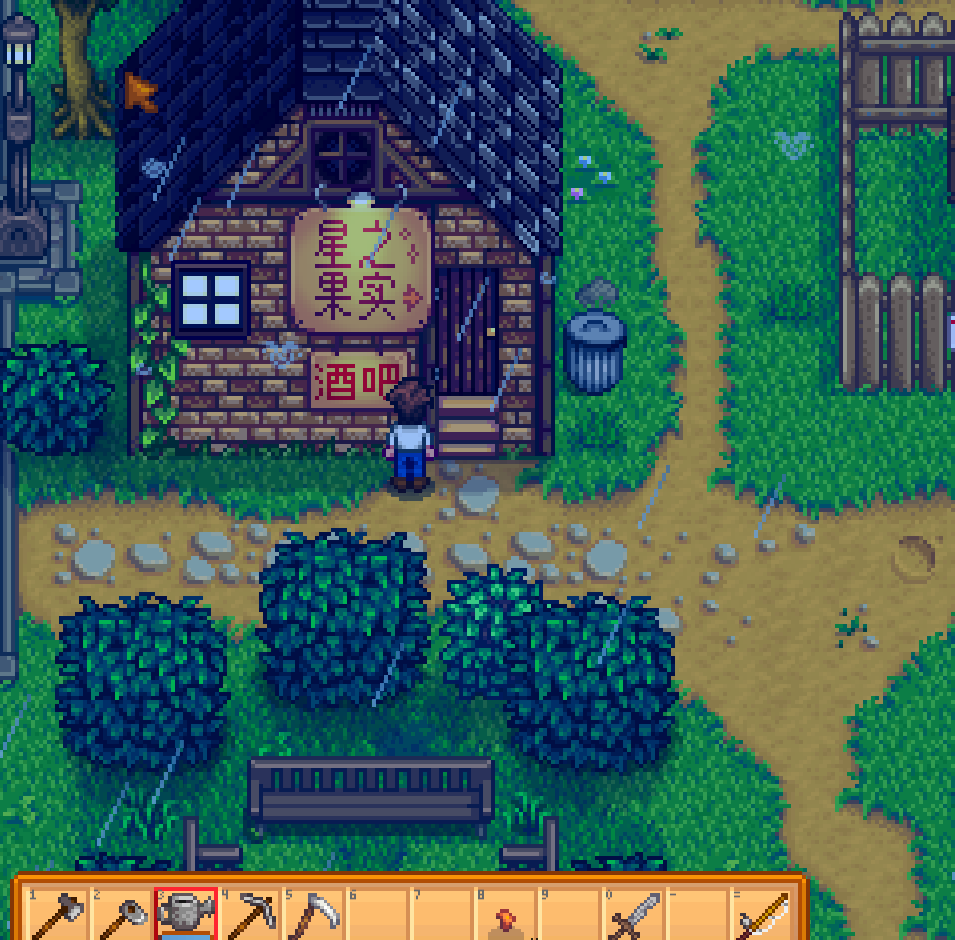

Quick answers (read this first)
- Hold a gift, walk up to a villager, right-click / gift interact to offer it.
- Talking daily builds friendship even without gifts.
- Birthdays are high-value gift days—mail/calendar help you notice.
- Do not gift trash, tools, or disliked forage blindly.
- Romance dancing can wait; Year 1 friendship is optional comfort content.
Who this is for
Use this if you want townsfolk hearts without a spreadsheet, or you keep gifting rocks by accident. Many new players discover gifting by clicking the wrong button and accidentally offering their pickaxe to Pierre. That is normal. Year 1 social play is about learning the rhythm—talk when you see someone, gift when you have something reasonable, and ignore the pressure to romance everyone before Summer.
Version note: Stardew Valley 1.6 keeps the same core gifting loop with quality-of-life polish elsewhere on the farm. Loved-gift lists are long and personal; you do not need them memorized in Spring. Learn a few safe items over time and use birthdays as your high-impact days.
Pros & cons
| Details | |
|---|---|
| Pros | Quests, recipes, and festivals feel friendlier; heart events and cutscenes unlock; town stops feel purposeful. |
| Cons | Inventory pressure; wrong gifts hurt a little; romance FOMO; easy to over-prioritize hearts over crops. |
| Use when | Chores are done and you already walk through town for seeds or the saloon. |
| Skip when | You are broke, still learning watering, or it is a crop emergency day. |
How gifting actually works
Gifting is a physical action: select an item on your toolbar, stand next to a villager, and use the gift interaction (right-click on PC). The villager reacts with a short response that hints whether they liked the item. Tools, trash, and random junk usually go poorly—ship those instead.
Friendship also grows when you talk to villagers, even with empty hands. Many new players think hearts require constant presents. In Year 1, consistent conversation on days you already visit town does most of the work. Gifts are spice, not homework.
Interactive checklist
Safe to skip (anti-FOMO)
- Max hearts with everyone in Spring.
- Buying expensive loved gifts from the Traveling Cart every week.
- Skipping crop days for full-town gift routes.
- Stressing about Flower Dance partners before you know how to gift at all.
Decision table
| Situation | Do | Avoid |
|---|---|---|
| Passing someone in town | Talk | Ignoring forever |
| Birthday today | Best gift you own | Nothing if you truly have zero items—talk still helps |
| Inventory full of stone | Ship stone | Gifting stone |
Gift safety table
When you are unsure, use broad habits instead of memorizing every villager preference on day three.
| Item type | Year 1 habit | Notes |
|---|---|---|
| Cooked food you made | Often safe, not universal | Watch reactions and remember winners |
| Spring forage flowers | Decent filler early | Some villagers care more than others |
| Tools and weapons | Never gift | Easy misclick—move tools off hotbar in town |
| Trash and debris | Ship or recycle | Friendship loss is not worth emptying pockets |
Safe early staples
Year 1 Spring does not need a memorized love list. You need a small “maybe gift” chest and cautious habits. Wording matters: many forage items are often liked by someone in town, but almost nothing is a true universal love. Check the reaction bubble. If you are unsure, talk only.
| Staple idea | Year 1 habit | Caveats (read these) |
|---|---|---|
| Spring wild flowers / common forage | Park extras in a gift chest; offer on birthdays or when you already stand next to someone | Daffodils and similar forage are not safe for everyone—some villagers dislike or hate certain flowers. Watch reactions; do not mass-gift one flower to the whole map. |
| Other seasonal forage you already pick on the walk to town | Keep a few; ship duplicates once the chest has a buffer | “Often liked” still fails sometimes. One bad reaction is information, not a ruined save. |
| Simple cooked food you made | Useful when you have a kitchen later; still not universal | Do not burn your only energy snack on a random weekday gift. |
| Nothing / talk only | Default when the hotbar is tools, trash, or mystery junk | Conversation still builds friendship. Gifting is optional spice. |
On our save, the winning Spring habit was boring: talk on Pierre / saloon days, gift mainly when birthday mail appeared, and never clear inventory by offering stone or weeds. If Bulletin Board bundles start asking for cooked or gifted items later, treat that as Mid+ Year 1 content—see the Community Center note on parking Bulletin Board early. For festival clustering (including dance FOMO), skim Flower Dance after your farm mornings feel stable.
Birthday-first friendship
The calendar beats random daily gift spam. Friendship systems limit how much value you get from flooding someone with mediocre items every day. A single thoughtful birthday gift—plus normal talking on errand days—usually moves the relationship more than a week of “here is another forage I do not want.” Mail often tips you off; the in-town calendar is the backup when you forget names.
Why calendar > daily routes in Year 1. Your mornings already owe watering, shipping, and maybe mines or rain fishing. A full-town gift route steals the energy and inventory space those systems need. Birthdays are scheduled spikes: you prepare one item from the maybe-gift chest, walk to that villager, and return to the farm. Miss a non-birthday day of gifting and nothing breaks. Miss noticing a birthday and you only lose a high-value opportunity—not the whole friendship system.
Early birthdays: QoL vs romance FOMO. Some early-season birthdays matter because those villagers sit near shops, help quests, or simply make town feel friendlier while you buy seeds—quality-of-life social, not marriage homework. Romance-candidate birthdays can wait unless you already care about that storyline; Flower Dance partners and bouquet timing are optional comfort goals, not Spring fail states. On our save we prioritized whoever the mail named that morning if we had a safe item, and we ignored the urge to “catch up” romance hearts before Summer. If a guide makes you feel behind on dancing, reread anti-FOMO on the Flower Dance page and keep Bulletin Board pressure in perspective via Community Center priorities.
Practical ritual we used: glance at mail after leaving the house, check the calendar when we passed it, move tools off the active slot before offering a gift, then stop. Two birthday hits in a season plus casual talk outperformed any spreadsheet route we abandoned after three exhausted evenings.
Weekly social rhythm table
| Day type | Low-effort social | Skip if busy |
|---|---|---|
| Town errand day | Talk to shopkeepers and anyone outside | Full gift route |
| Rainy mine day | Maybe one saloon visit at night | Chasing villagers across the map |
| Festival day | Talk to clusters; one gift if ready | Spreadsheet heart grinding |
| Birthday mail day | Prioritize that villager | Skipping talk entirely |
Real screenshots

Game screenshot © ConcernedApe — used for guide commentary

Game screenshot © ConcernedApe — used for guide commentary

Game screenshot © ConcernedApe — used for guide commentary

Game screenshot © ConcernedApe — used for guide commentary
Operations
Use this eight-step gifting loop once your farm chores are under control. It keeps social play fun instead of a second job.
- Finish watering and shipping first. Crops pay the bills; gifts do not replace them in Year 1.
- Check mail and the calendar when you pass them. Birthday letters are your reminder to prep something nice.
- Move tools off the active toolbar before town. Prevents the classic pickaxe-to-Pierre accident.
- Talk to anyone you already walk past. One dialogue per errand day adds up quietly.
- Select a gift item and stand adjacent to the villager. Empty hands for talk; item in hand only when you mean to gift.
- Right-click to offer—not attack or use tool. Watch the reaction bubble and remember likes and dislikes informally.
- Store uncertain items in a “maybe gift” chest. Pull from there on birthdays instead of panic-buying.
- Stop when it stops being fun. Two thoughtful interactions beat a full-town sprint that makes you hate Pelican Town.
Alternative variations
The slow social player
Some Year 1 saves ignore gifting almost entirely except birthdays and festival clusters. They still talk on errand days and unlock plenty of content. If crops and mines already fill your brain, this is fine—hearts will wait.
The festival-focused player
Others batch social energy on festival days when everyone is in one place. They gift sparingly the rest of the season and use events as their main friendship push. Pair that with birthday mail so you do not miss high-impact days.
Common mistakes
- Gifting tools. Misclicks happen when your sword or hoe is on the same slot you use in town. Swap to a neutral item before chatting.
- Ignoring birthdays then stressing Flower Dance partners. Birthday gifts punch above their weight. One good item on the right day beats a week of random forage.
- Turning social into a second full-time job in week one. Many new players chase hearts before they can afford seeds. Talk when convenient; do not skip watering for gift routes.
- Dumping disliked junk to clear inventory. Shipping exists for a reason. A small friendship penalty is not worth the “cleanup.”
- Assuming romance is required in Year 1. Marriage is optional comfort content. Park dance partners and bouquet plans until the farm feels stable.
FAQ
How many gifts per week?
Friendship systems limit useful gifts per week per person—talking still matters on days you cannot gift. Do not spam items daily; quality and birthdays beat volume.
Do I need romance in Year 1?
No. Romance, marriage, and the Flower Dance are optional. Build friendship casually and pursue relationships when you want the story, not because a guide said you are behind.
What if I gift something they hate?
It is not save-breaking. You lose a little friendship and learn for next time. Ship junk instead of experimenting on non-birthdays.
Can I gift the same item to everyone?
Some items are broadly liked, but universal gifts are rare. Use safe categories (home cooking, some flowers) and learn individual favorites over seasons.
Does talking count if I already gifted this week?
Yes. Conversation still builds friendship on its own. Many weeks, talk does more work than a mediocre gift would.
Related
Unofficial fan guide. Not affiliated with ConcernedApe or the original developers of Stardew Valley.